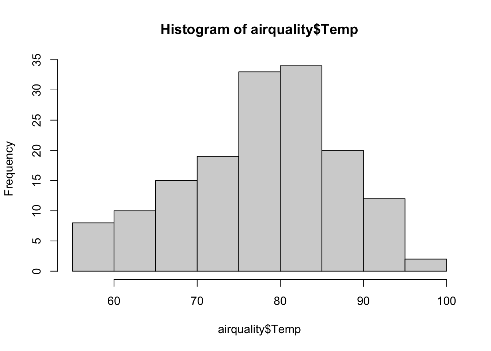
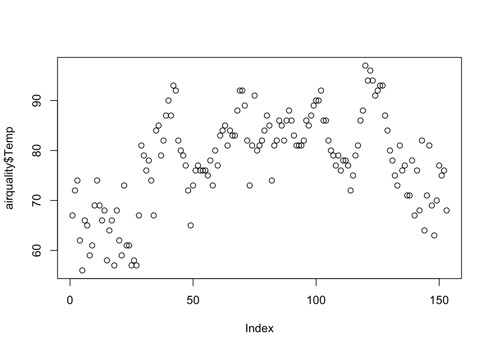
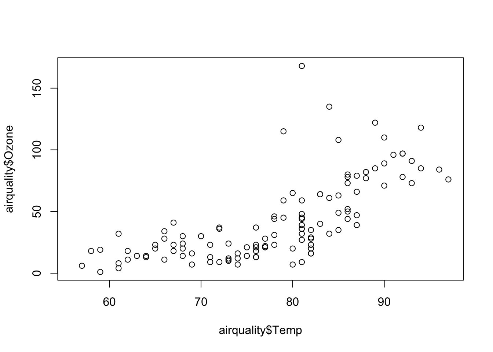
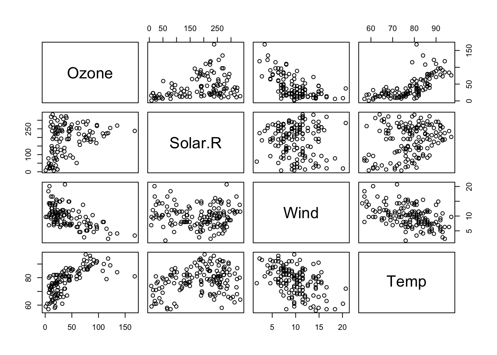
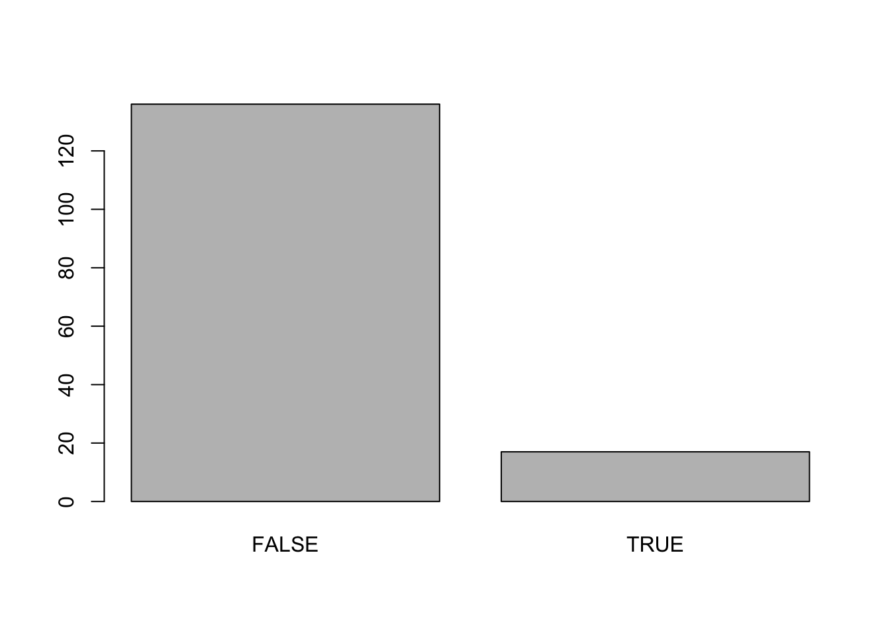
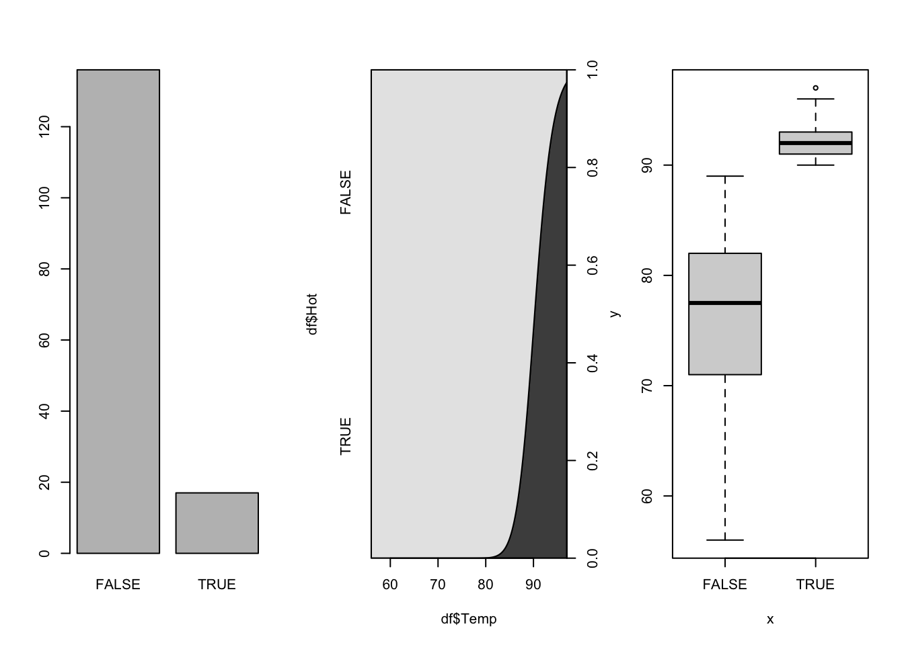

data(airquality)
head(airquality, n=2) Ozone Solar.R Wind Temp Month Day
1 41 190 7.4 67 5 1
2 36 118 8.0 72 5 2This notebook demonstrates data exploration techniques using the base R language:
No additional packages needed in this notebook.
The airquality data set is built-into R so we can just load it with the data() function. The data set has 154 observations of 6 variables:
The data was collected from May to September, 1973, in New York. You can learn more about the data by typing ?airquality at the console.
The head() function will display the first 2 rows, since n=2. By default it displays 6 rows. There is also a tail() function.
data(airquality)
head(airquality, n=2) Ozone Solar.R Wind Temp Month Day
1 41 190 7.4 67 5 1
2 36 118 8.0 72 5 2Missing data is encoded with NA. We can count them with the sum() and is.na() functions, nested. The is.na() function returns a TRUE FALSE vector. Then the sum functions adds the TRUE values because TRUE=1 and FALSE=0.
Next we try to take the mean of the Ozone column. The syntax data$col lets us access the column specified. The mean returned NA because it had NAs in that column. We try it again, and this time add a parameter telling it to ignore NAs.
Try each command one at a time by using ctrl-enter on each line.
sum(is.na(airquality$Ozone))[1] 37mean(airquality$Ozone)[1] NAmean(airquality$Ozone, na.rm=TRUE)[1] 42.12931One option of dealing with NAs is to remove rows that have NAs. Another option is to replace NAs with mean values. We show that second option next. First we make a copy of the airquality data set.
The following syntax selects all rows which have NAs in the Ozone column.
df$Ozone[is.na(df$Ozone)]
These selected elements, and only these, will be replaced by the mean of the column.
df <- airquality[]
df$Ozone[is.na(df$Ozone)] <- mean(df$Ozone, na.rm=TRUE)
mean(df$Ozone)[1] 42.12931R has a lot of built-in data visualization tools. The first graph in the code below is a histogram of the temperature field. The second graph plots temperature on the y axis and the index of the observation on the x axis. You can see the ups and downs of the temperature. The third plot puts temperature on the x axis and Ozone on the y axis.
These plots are very simple but convey important information. If you want to make more visually appealling graphs there are many options to modify the point color, symbol, size, change the labels, and much more.
This link describes many graphical parameters.
The final graph below uses some of these parameters.
hist(airquality$Temp)
plot(airquality$Temp)
plot(airquality$Temp, airquality$Ozone)
plot(airquality$Ozone, airquality$Temp, pch=16, col="blue", cex=1.5,
main="Airquality", xlab="Ozone", ylab="Temperature") 
We can check for correlatios between columns by creating a table with the cor() function or visually look for correlations by plotting pairs(). The use=“complete” option tells it to ignore NAs.
cor(airquality[1:4], use="complete") Ozone Solar.R Wind Temp
Ozone 1.0000000 0.3483417 -0.6124966 0.6985414
Solar.R 0.3483417 1.0000000 -0.1271835 0.2940876
Wind -0.6124966 -0.1271835 1.0000000 -0.4971897
Temp 0.6985414 0.2940876 -0.4971897 1.0000000pairs(airquality[1:4])
The next code chunk shows how to add a column to a data frame. We first make a copy of the data set. Then we create a new column in which every element is FALSE. Then we select elements where the corresponding element in Temp is over 89, and we classify those as TRUE. Then we display a few rows from the data and plot the new Hot column.
Run these lines one at a time (ctrl-enter) to make sure you understand what each line does. In particular, look at df$Hot after each step by typing df$Hot in the console.
df <- airquality[] # copy the data set df
df$Hot <- FALSE
df$Hot[df$Temp>89] <- TRUE
df$Hot <- factor(df$Hot)
df$Hot[40:46][1] TRUE FALSE TRUE TRUE FALSE FALSE FALSE
Levels: FALSE TRUEplot(df$Hot)
We have plotted numeric data above but now we are going to create 3 plots for our new factor. First we use the par() function to set up a 1x3 grid to hold the pictures then we create a plot showing the distribution, a conditional density plot, and a box plot.
par(mfrow=c(1,3))
plot(df$Hot)
cdplot(df$Temp, df$Hot)
plot(df$Hot, df$Temp)